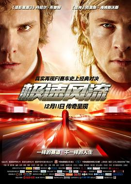

极速风流 / Rush
又名：一级双雄(港) / 决战终点线(台) / F1双雄 / 冲刺 / 极速冲刺 / 竞速风流
作品信息
| 导演 | 朗·霍华德 |
| 编剧 | 皮特·摩根 |
| 主演 | 克里斯·海姆斯沃斯 / 丹尼尔·布鲁赫 / 奥利维亚·王尔德 / 亚历山德拉·玛丽亚·拉娜 / 皮耶尔弗兰切斯科·法维诺 / 大卫·卡尔德 / 娜塔莉·多默尔 / 史蒂芬·曼甘 / 克里斯蒂安·麦凯 / 阿利斯泰尔·皮特里 / 朱利安·林希德-图特 / 科林·斯廷顿 / 帕特里克·巴拉迪 / 文森特·里奥特 / 马丁·萨维奇 / 杰米·西弗斯 / 汤姆·弗拉席亚 / 克里斯蒂安·索利诺 / 詹姆斯·诺顿 / 约瑟芬·德·拉·波美 / 杰弗里·斯特里特菲尔德 / 布鲁克·约翰斯顿 / 汉纳·布里特兰德 / 利萨·麦克阿里斯特 / 汉斯-埃卡特·埃克哈特 / 小家山晃 / 罗杰·内瓦雷斯 / 罗非洛·迪格托勒 / 马可·卡纳迪 / 迪米特里·格里特萨斯 / 杰伊·辛普森 / 菲利普·斯波 / 恩里奇·雷德曼 / 藤本政志 / 罗伯特·卡瓦佐斯 / 李·阿斯奎斯-柯 / 贝恩·科拉科 / 克里斯·考林 / 格拉姆·柯里 |
| 类型 | 剧情 / 传记 / 运动 |
| 制片国家/地区 | 英国 / 德国 / 美国 |
| 语言 | 英语 / 德语 / 意大利语 / 法语 / 西班牙语 |
| 上映日期 | 2015-12-11(中国大陆) / 2013-09-13(英国) |
| 片长 | 123分钟 / 121分钟(中国大陆) |
| IMDb | tt1979320 |
最后一次看到是 2026-08-12T21:13:16+08:00 · 豆瓣原页